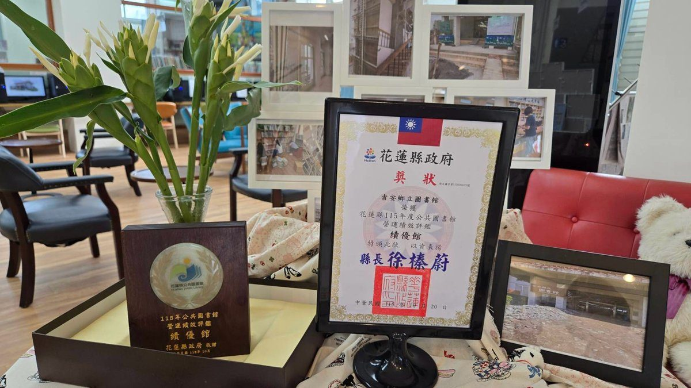
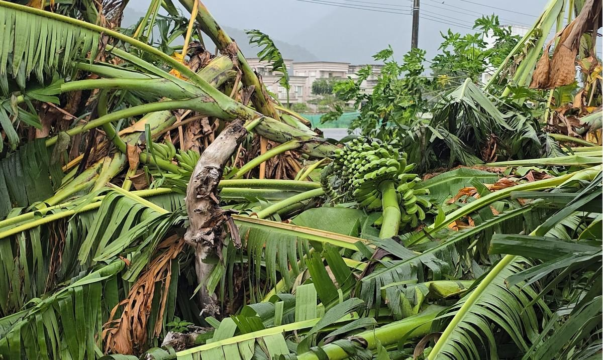

吉安鄉圖獲評績優館 館藏突破8.5萬冊
吉安鄉立圖書館榮獲115年花蓮縣公共圖書館營運績效評鑑「績優館」肯定，購書經費由64萬元提高到180萬元，館藏從7萬餘冊突破8萬5,107冊，每週開放65小時服務逾8萬3千名鄉民，並以夜宿圖書館、菜市場閱讀等跨域活動，把…
閱讀全文 →
吉安鄉立圖書館榮獲115年花蓮縣公共圖書館營運績效評鑑「績優館」肯定，購書經費由64萬元提高到180萬元，館藏從7萬餘冊突破8萬5,107冊，每週開放65小時服務逾8萬3千名鄉民，並以夜宿圖書館、菜市場閱讀等跨域活動，把…
閱讀全文 →近日網路社群及通訊軟體流傳「敬老卡換卡新知」訊息，為避免長輩受錯誤訊息誤導，花蓮縣政府鄭重澄清：該則訊息非本縣推行政策與規範，請鄉親勿信勿傳，相關政策資訊請以縣府正式公告為準。…
閱讀全文 →
花蓮縣政府將於10月31日下午在花蓮習藝所舉辦「青少年據點聯合成果展」，串聯四處社區據點帶來市集、舞台展演與拍貼體驗，展現青少年的多元創意與活力。…
閱讀全文 →花蓮市公所舉辦「鼓動洄瀾・舞耀風華」臺日國際藝文展演，邀請三組享譽國際的日本頂級藝術團隊同臺獻藝，並於28日拜會市公所，促進臺日文化交流。…
閱讀全文 →第 44 期・10/30 – 11/05 本週運勢精華指南。🌌 本週星象提示：水星在天蠍逆行到 11/13，11/2（一）逢獅子座下弦月，火星與木星仍同在獅子。這週不適合開新局，適合把舊帳一次清乾淨。。十二星座運勢詳情、…
閱讀全文 →毒駕新制10月31日上路，首犯最高罰15萬元，無論車主車輛一律沒入，同車明知乘客連坐開罰。…
閱讀全文 →花蓮縣警察局新城分局合歡派出所日前接獲報案，一名李姓男子駕駛自小貨車行經臺8線中橫公路126公里處，因山區起大霧、視線不佳不慎滑落路旁排水溝受困。警員林宏良獲報火速馳援現場，協助聯繫拖吊業者排除事故，順利助李男脫困續行。…
閱讀全文 →可樂電子報小編/編輯 上完廁所別急著沖水，多看一眼可能及早發現腎臟警訊！許多民眾常以為 […]…
閱讀全文 →花蓮市果菜批發市場擴建工程延宕多年，花蓮縣政府說明主因是花蔬與營造廠商履約爭議，雙方仍在民事訴訟程序中，未完工建物也因法院證據保全程序無法復工；縣府已主動委託專業建築師完成復工經費評估，並以自有預算籌措經費，持續出席法院…
閱讀全文 →可樂電子報小編/編輯 花蓮慈濟醫院「全人整合照護團隊」推動健康平權、翻轉健保的努力，甫 […]…
閱讀全文 →
薔琵颱風過境造成花蓮吉安鄉香蕉、玉米等高莖作物倒伏折損，農民災損通報陸續湧入。吉安鄉公所啟動災損查報並配合縣府及農糧署辦理現地會勘，簡化勘查程序、加速天然災害救助作業，協助受災農民儘速復耕復建，並提醒農民可利用「農產業天…
閱讀全文 →
花蓮縣選舉委員會27日辦理第20屆花蓮縣長候選人號次抽籤，抽籤結果：1號魏嘉賢、2號張峻、3號游淑貞、4號羅佩秦，選戰正式全面開跑。…
閱讀全文 →
可樂電子報小編/編輯 為協助各機關掌握《公益揭弊者保護法》施行細則及相關實務作業，法務 […]…
閱讀全文 →
可樂電子報小編/編輯 為促進海洋文化交流並深化保育意識，花蓮縣政府10月17日舉辦海洋 […]…
閱讀全文 →
可樂電子報小編/編輯 花蓮市選務作業中心27日辦理第20屆市長、第23屆市民代表及里長 […]…
閱讀全文 →
吉安鄉公所27日辦理第20屆鄉長、第23屆鄉民代表及村長候選人號次抽籤，5位鄉長候選人與31位代表、40位村長候選人號次全數底定，另有4個村同額競選免抽籤直接排1號，九合一選舉將於11月28日投票。…
閱讀全文 →
可樂電子報小編/編輯 強烈颱風「薔琵」遠離，花蓮縣政府公佈因應 […]…
閱讀全文 →
可樂電子報小編/編輯 強烈颱風「薔琵」過境後，花蓮災後環境復原 […]…
閱讀全文 →
可樂電子報小編/編輯 由花蓮縣政府原住民行政處打造的年度音樂盛事「2026花蓮韓流原聲 […]…
閱讀全文 →
可樂電子報小編/編輯 在悠揚莊嚴的詩歌聲中，長期關懷脊髓損傷者 […]…
閱讀全文 →